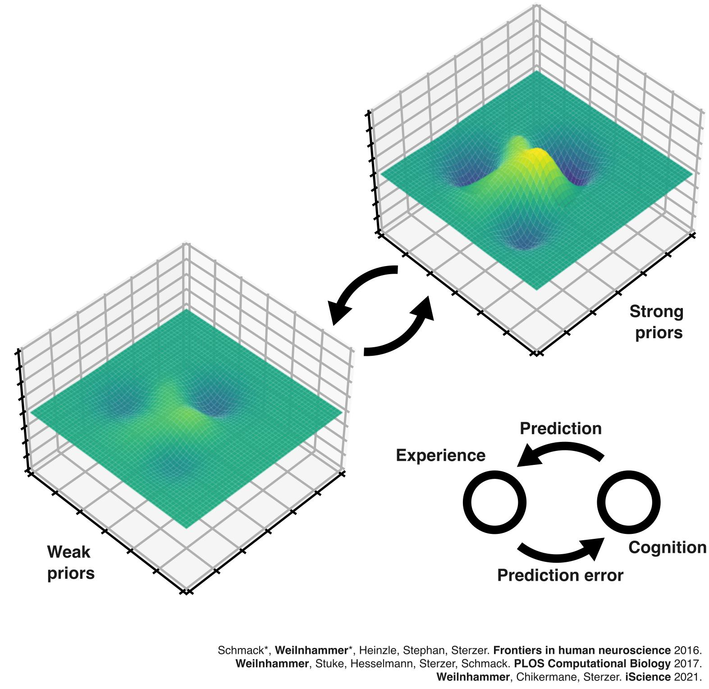

Die Geometrie psychischer Gesundheit
PD Dr. med. Veith Weilnhammer
Helen Wills Neuroscience Institute & Berkeley Artificial Intelligence Research Center
University of California Berkeley


Die Geometrie psychischer Gesundheit

Frau X

Frau X


Es begann mit seltsamen Geräuschen durch die Wand, leise und kaum zu erkennen, als würde jemand lauschen.
Mit der Zeit konnte ich die Stimme meines Nachbarn ausmachen. Ich musste der Sache nachgehen.
Zunächst hörte ich seine Stimme nur in meiner Wohnung, doch später folgte er mir an andere Orte.
Da fiel es mir wie Schuppen von den Augen - er ist ein Agent!
Frau Dr. Y

Der psychopathologische Befund

Klinische Repräsentation

Binäre Diagnosestellung

Therapieentscheidung

Lost in translation


Found in translation

Komputationale Psychiatrie: Präzise neurokognitive (Patho-) Mechanismen
Digitale Phänotypen: Neue geometrische Repräsentationen psychischer Gesundheit
Komputationale Psychiatrie
Die neurokognitiven Mechanismen psychotischer Erlebnisse

Es begann mit seltsamen Geräuschen durch die Wand, leise und kaum zu erkennen, als würde jemand lauschen.
Mit der Zeit konnte ich die Stimme meines Nachbarn ausmachen. Ich musste der Sache nachgehen.
Zunächst hörte ich seine Stimme nur in meiner Wohnung, doch später folgte er mir auch an andere Orte.
Da fiel es mir wie Schuppen von den Augen - er ist ein Agent!

Es begann mit seltsamen Geräuschen durch die Wand, leise und kaum zu erkennen, als würde jemand lauschen.
Mit der Zeit konnte ich die Stimme meines Nachbarn ausmachen. Ich musste der Sache nachgehen.
Zunächst hörte ich seine Stimme nur in meiner Wohnung, doch später folgte er mir auch an andere Orte.
Da fiel es mir wie Schuppen von den Augen - er ist ein Agent!


Schizophreniemodell

Predictive processing

Fall-Kontroll Studien

Modell-basierte fMRT

Läsionsstudien

Hidden Markov Modelle

NMDAR Hypofunktion

Symptom-Tracking

Ziele im LOEWE Zentrum DYNAMIC
- Digitale Assays & Neuro AI: Verhalten, Modelle, KI, Imaging
- Klinik: Schizophrenie & NMDAR Enzephalitis
- Closed-loop Neurotechnologie: Dynamische neuronavigierte nicht-invasive Hirnstimulation
Outcome: Multimodale & dynamische Repräsentationen psychotischer Symptome
- Arbeitsbereiche 1 & 3 (Netzwerkbeschreibung und -veränderung)
Präzisionspsychiatrie
Digitale Phänotypen
Neue geometrische Repräsentationen psychischer Gesundheit

Globale durchschnittliche Bildschirmzeit: 6 Stunden und 34 Minuten pro Tag.
Digitale Bewegungen sind Bestandteil nahezu aller Interaktionen mit Computern.
Passiv erhobene Daten, die in Echtzeit, mit hoher Präzision und ohne relevante Kosten gesammelt werden können.
Können digitale Bewegungen psychische Gesundheit vorhersagen?


Open Source Software

- MINDMAP: Mapping INdividual Digital behavior to MentAl health And Psychopathology
- SCRAMBLER: SeCure Randomization for Anonymous Movement in the Browser
Ziele im LOEWE Zentrum DYNAMIC

- Digital Twins integrieren
- Digitales Verhalten
- NLP Repräsentationen
- Präzisionspsychiatrische Assays
- Evaluation, Sicherheit & Open Source
- Validierung digitaler Phänotypen
- Ethische & datenschutzrechtliche Herausforderungen
- Transparenz und Interpretierbarkeit KI-gestützter Modelle
- Erfahrungsexpert:innen
- Co-Design digitaler Interventionen & Wissenschaftskommunikation
Outcome: Translationales Screening und Monitoring psychischer Gesundheit
- Arbeitsbereich 2 (longitudinale Netzwerkdaten)
Vielen Dank für Ihre Aufmerksamkeit!
Referenzen (Auswahl)
A Predictive Coding Account of Bistable Perception. PLOS Computational Biology 2017.
Psychotic Experiences in Schizophrenia and Sensitivity to Sensory Evidence. Schizophrenia Bulletin 2020.
An Active Role of Inferior Frontal Cortex in Conscious Experience. Current Biology 2021.
Sensory processing in humans and mice fluctuates between external and internal modes. PLOS Biology 2023.
Dynamic predictive templates in perception. Current Biology 2024.
N-Methyl-D-aspartate receptor hypofunction causes recurrent and transient failures of perceptual inference. Brain 2025.